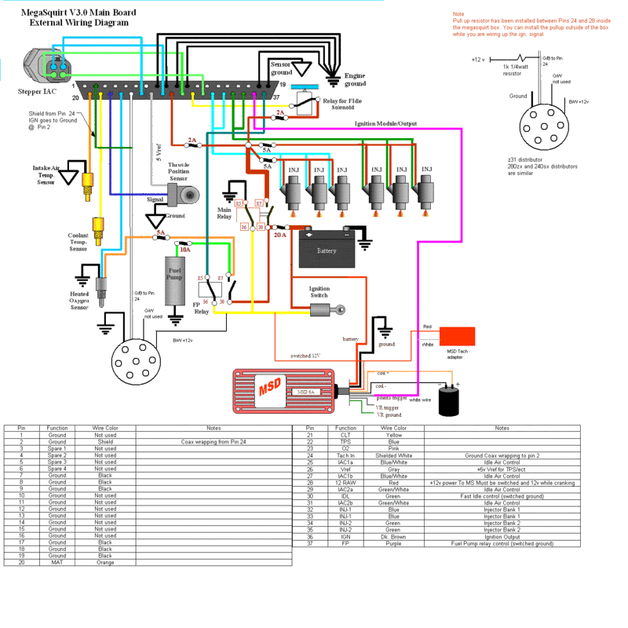

-
Nah not late buy DIY is where I am getting all my stuff from. I really like the way things are set up there.
So sleepy -
DIY is great. I talk to both the owner Jerry and Matt all the time about questions and such. They know what they are talking about and are more than willing to help you figure out what you need. They helped me on tuning once and they really didn't have to. -
I see no one has posted in this thread in over a year. i was thinking about buying this for the Z but idk what it might need or anything about megasquirt. im not new to ems by any means just never messed with megasquirt. can someone give me some pointers on megasquirt.
http://www.rx7club.com/showthread.php?t=87877589' Turbo-R.I.P. (scrapped)
87' NA all parts swapped from 89', Stance, 3.3 long block, hx35w, Injector Dynamics 1000cc, isky cams, pathfinder intake, front mount, megasquirt v3.57 w/MS3X
07 Frontier XE <----(turd) daily -
BLOZ UP.com
It is not recommended to confirm proper installation by driving into walls or other barriers as this could cause personal injury or damage to the vehicle. -
Figure I would add my two cents in here.
This wiring diagram is a modified megasquirt 2 diagram for using a DIYautotune wire bundle GM IAT, stock nissan CTS. With a MSD 6a box I am not sure if I will need the tach adapter as of yet since I have a few more things to button up before trying to start it. Also at of the moment I will not be using any IAC or Fidle.
 -
i know that im new to the forums and to z31s in general but the ztoys link is dead and would like to know if i did do the swap i want to do way in the future (6 months to a year from now) if id be able to download a base fuel map from one of you. lemme know. -
very cool. well im planning on dumping in megasquirt next semester sooo… -
huh, hope to have step by step megasquirt wiring for Z31 soon. I'll buy megasquirt II v3.57 this week. :-(zachheldt wrote: very cool. well im planning on dumping in megasquirt next semester sooo… -
I'll be installing megasquirt 2 in my car sometime in the next month or so. Its going in as part of my 400 hp rebuild The websites listed look very helpful
The websites listed look very helpful
-
So if you can use the stock ignition system, basically all I need megasquirt for is the fuel/air mixture? What about the idle control valve? -
Read this http://www.megamanual.com/index.html then post if you have any questions.Bolt on, fast, z31. You can only pick two.
Old weaksauce numbers: 391hp/433tq

-
All you need to get it running is to hook up the injectors, grounds, IAT, CLT, spark output, MAP, and CAS. Everything else is just a luxury.BLOZ UP.com
It is not recommended to confirm proper installation by driving into walls or other barriers as this could cause personal injury or damage to the vehicle. -
Yes you can pick up the power transistor tach signal to megasquirt pin 24, with the 1k ohm resistor to 12v pull up, upgrade to TPS (under 88 z31), wire the other 3 sensors CLT, IAT, O2 and that's it.
For fuel only!

Datsun 240z L28ET.
Datsun 1500 1971 VG30ET.
Datsun 280zx 5.3 vortec turbo. -
Really glad to see z31 guys doing Ms.I am in the process of MS .I am doing everything from assembly to tune on my own.Hope to see more on this forum about MS. -
Hmmm....going to buy megasquirt soon and well, all posts are old and all informative links are down? But I read it all.

Copyright © 2006–. All rights reserved. Privacy Policy